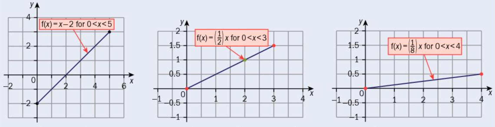
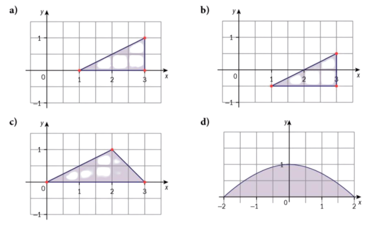

Dr. Julio César Ramírez-Pacheco
Presentación en: https://monoxide2000.github.io/slidesSTAT_02
Una variable aleatoria $X$, en un espacio de probabilidad $(\Omega, \mathcal{F},P)$, es un mapeo de $\Omega$ a
$\mathbb{R}$, es decir, $X:\Omega \to \mathbb{R}$
$\Omega$ es el dominio de la variable aleatoria y $\mathbb{R}$ su rango.
Para que $X$ sea considerada una variable aleatoria se tiene que cumplir que:
Las variables aleatorias quedan especificadas por:
La función de distribución de una variable aleatoria $X$ es la función definida como:
$$
F_X(x) = P\left\{ X \le x\right\},
$$
definida para cualquier número $x$ de $-\infty$ a $+\infty$.
Propiedades de la CDF:
Sea $X$ una variable aleatoria con distribución: $$ F_X(x) = \begin{cases} 0 & x < -1\\ 1/4 & -1 \le x < 1\\ 1/2 & 1 \le x < 3\\ 3/4 & 3 \le x < 5\\ 1 & x \ge 5 \end{cases} $$ Calcular $P(-1 < X \le 1.5)$ y $P(X\ge 1)$
Solución: Recordemos que; $P(a < X\le b) = F_X(b)-F_X(a)$, por lo tanto: $$ P(-1 < X \le 1.5) = F_X(1.5)- F_X(-1) = 1/2- 1/4= 1/4 $$
Solución: Recordemos que; $P(X\ge b) = 1-F_x(b)+P(X=b)$, por lo tanto: $$ P(X \le 1) = 1-F_X(1)+P(X=1) = 1-1/2+1/4 = 3/4 $$
Sea $X$ una variable aleatoria con $F_X(x)$: $$ F_X(x) = \begin{cases} 0 & x < 1\\ 2\left(1- \frac{1}{x}\right) & 1 \le x < 2\\ 1 & x \ge 2 \end{cases} $$ Calcular $P(-1 < X \le 1.5)$
Solución: Recordemos que $P(a < X \le b) = F_X(b)-F_X(a)$ , por lo tanto: $$\begin{align} P(-1 < X \le 1.5) = & F_X(1.5)- F_X(-1)\\ =& 2/3 - 0 = 2/3 \end{align}$$
Sea $F_X(x)$ la función de distribución de una variable aleatoria $X$, la función de densidad de $X$
denotada por $f_X(x)$ está definida por:
$$
f_X(x) = \frac{dF_X(x)}{dx},
$$
donde $x \in \mathbb{R}$.
Propiedades de la PDF:
¿Cuáles funciones cumplen con la condición de representar una PDF?
¿Cuáles funciones cumplen con la condición de representar una PDF?
La función de densidad de una variable aleatoria está dada por: $$ f_X(x) = \begin{cases} x & 0 < x < 1\\ 2-x & 1 \le x < 2\\ 0 & \mbox{en otro caso} \end{cases} $$ Calcular $P(0.2 < X \le 0.8)$
Solución: Recordemos que $P(a < X \le b) = \int_{a}^b{f_X(x)\, dx}$ , por lo tanto: $$\begin{align} P(0.2 < X \le 0.8) = & \int_{0.2}^{0.8}{x\, dx} = \frac{x^2}{2} \biggr\rvert_{0.2}^{0.8}\\ =& \frac{1}{2}\times\left((0.8)^2-(0.2)^2\right) = 0.3. \end{align}$$
Sea $X$ una variable aleatoria discreta con valores $x_1, x_2, ... x_n$, la función de masa de probabilidad de $X$ está dada por:
$$
p_X(x_i) = P(X=x_i) = F_X(x_i)-F_(x_{i-1}),
$$
donde $x_i < x_j$ si $i < j$.
Propiedades de la PMF: